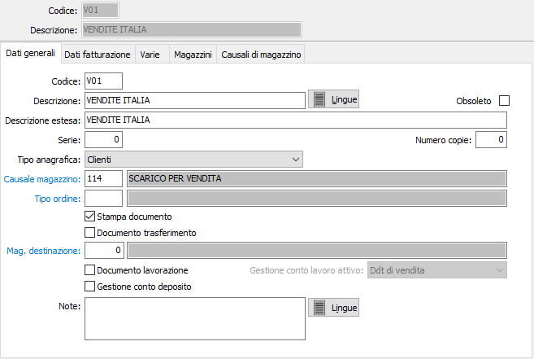
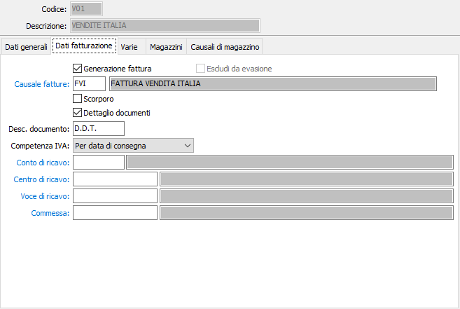
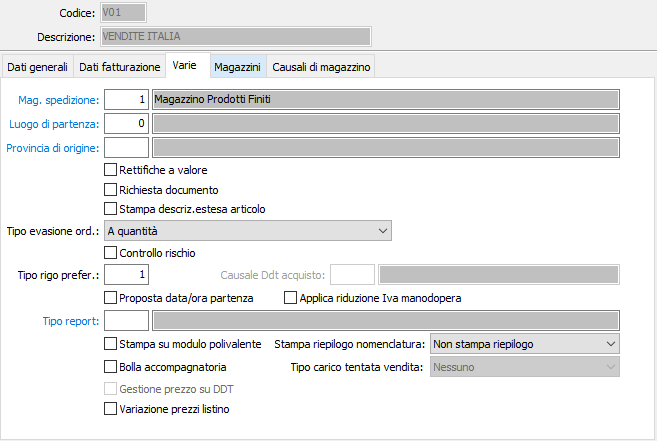
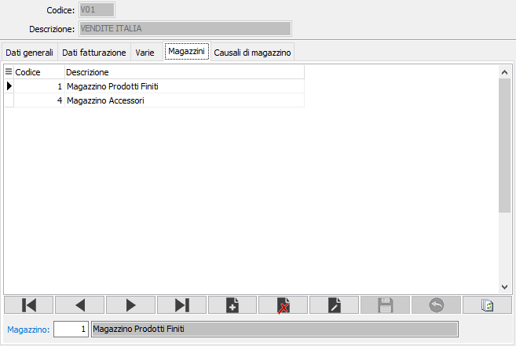
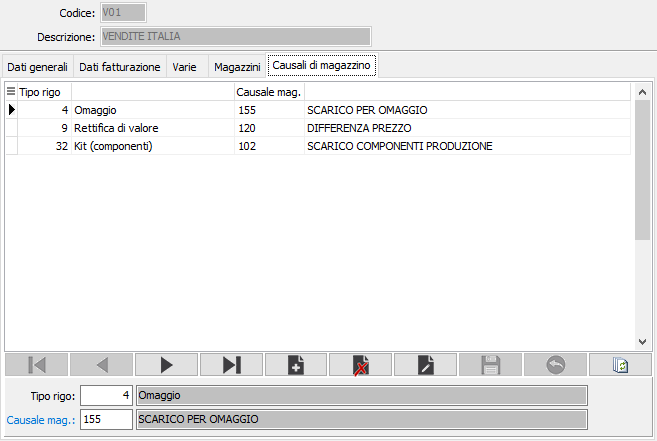

Causali Ddt
Le causali vengono utilizzate al momento dell’emissione di un Ddt di consegna e determinano il tipo di documento da emettere.
Grazie alle diverse causali possono essere emessi Ddt di vendita che generano fatture, Ddt di uscita merce verso clienti o verso terzi che non generano fatture (visione, fine riparazione, ecc), Ddt di uscita merce verso fornitori che non generano fatture (reso su acquisto).
Se è presente la procedura di Gestione Magazzino, nella causale può essere inserita la relativa causale di magazzino affinché l’emissione di un Ddt determini, senza ulteriori interventi da parte dell’operatore, una scrittura di prima nota di magazzino.
E’ possibile gestire causali che movimentano trasferimenti di merci fra due magazzini della stessa azienda, ovvero fra l’azienda e lavoranti esterni.
E’ possibile gestire causali che consentono di inserire documenti che genereranno fatture o note di credito solo a valore, agendo comunque sui movimenti di magazzino solo a valore. Ovviamente è opportuno assegnare a queste causali una “serie” di documenti diversa rispetto a quella utilizzata dalle causali che generano documenti di effettivo trasferimento merci.
La finestra video di manutenzione Causali Ddt si articola su 5 pagine video, suddivise in due sezioni. La sezione superiore rimane invariata in tutte le pagine video e contiene le informazioni anagrafiche della causale stessa.
Linguetta dati generali

CODICE: codice alfanumerico di 3 caratteri, a libera scelta dell'utente, per individuare la causale attiva. Sul campo sono attive le funzioni di ricerca (F9) sulla tabella stessa.
DESCRIZIONE: campo alfanumerico di 30 caratteri per inserire la descrizione della causale attiva. Questa descrizione viene stampata sui documenti se il programma di stampa lo prevede.
OBSOLETO: flag attivabile dall’utente per inibire il possibile utilizzo dell’elemento di tabella in esame nelle successive transazioni.
DESCRIZIONE ESTESA: campo alfanumerico di 60 caratteri per inserire la descrizione estesa della causale attiva ad uso interno dell’utente. Questa descrizione non viene stampata sui documenti ma viene visualizzata nelle viste.
SERIE: campo numerico per inserire il numero di serie del documento. Ciascuna serie attiva una propria numerazione di documenti. E’ necessario, in fase di immissione del documento, per proporre automaticamente e correttamente il numero progressivo del documento acquisito dalla tabella protocolli.
NUMERO COPIE: Indicare il numero di copie da stampare, se zero saranno stampate le copie previste sull'anagrafica del cliente.
TIPO ANAGRAFICA: definisce quale tipo di anagrafica verrà utilizzata dal documento. Valori possibili: clienti, fornitori, magazzini esterni.
CAUSALE MAGAZZINO: codice alfanumerico di 3 caratteri, presente nella tabella Causali di magazzino, che individua i parametri del movimento di magazzino generato automaticamente dal documento attivo. L’informazione può essere omessa in caso di assenza della procedura Gestione magazzino oppure se non si intende generare automaticamente movimenti di magazzino. Sul campo sono attive le funzioni di ricerca (F9) e manutenzione (CTRL+W) sulla tabella stessa.
TIPO ORDINE: codice alfanumerico di 3 caratteri, presente nella tabella Tipologie ordini, che individua la tipologia di ordini che possono essere evasi tramite il documento attivo. L’informazione può essere omessa in caso di assenza della procedura Gestione ordini di vendita oppure se non si intende riservare il documento attivo all’evasione di una specifica tipologia di ordini. Sul campo sono attive le funzioni di ricerca (F9) e manutenzione (CTRL+W) sulla tabella stessa.
STAMPA DOCUMENTO: determina, se presente la spunta, la richiesta della stampa del documento direttamente al termine dell'inserimento. L’assenza della spunta è giustificata in caso di gestione dei Ddt dei depositari.
DOCUMENTO TRASFERIMENTO: abilita, se presente la spunta, l’emissione di documenti di trasferimento fra magazzini diversi della stessa azienda. La presenza della spunta rende significativo il campo successivo.
MAGAZZINO DI DESTINAZIONE: codice numerico, presente nella tabella Magazzini, che individua il magazzino aziendale di destinazione della merce. Il valore è significativo se il flag precedente contiene la spunta; in questo caso, l’indicazione del magazzino di destinazione preferenziale nella causale non potrà essere modificata dall’utente all’atto dell’emissione del documento. Sul campo sono attive le funzioni di ricerca (F9) e manutenzione (CTRL+W) sulla tabella stessa.
DOCUMENTO LAVORAZIONE: abilita, se presente la spunta, l’emissione di documenti di trasferimento verso lavoranti esterni.
GESTIONE CONTO DEPOSITO: abilita, se presente la spunta, la gestione del conto deposito.
GESTIONE CONTO LAVORO ATTIVO: consente di specificare per quale tipo di documento sarà utilizzata la causale:
Ddt di vendita, il parametro è da utilizzare per i documenti che non interessano il conto lavoro attivo;
Ddt di uscita c/to lavoro attivo, parametro da utilizzare per le causali di documenti di restituzione di merce lavorata al cliente;
Ddt di ingresso c/to lavoro attivo, parametro da utilizzare per la registrazione di Ddt di merce inviata dal cliente.
NOTE: campo note per descrizioni relative al documento attivo.
Linguetta dati fatturazione
La linguetta contiene le informazioni relative ai criteri di generazione della successiva fattura.

GENERAZIONE FATTURA: abilita, se presente la spunta, la successiva generazione di fatture a partire dal documento attivo.
ESCLUDI DA EVASIONE: Attivo per i Ddt non fatturabili; se spuntato definisce che i documenti con questa causale non dovranno comparire nell'elenco dei Ddt evadibili.
CAUSALE FATTURA: eventuale codice alfanumerico di 3 caratteri, presente nella tabella Causali di fatturazione, che definisce il tipo di fattura che sarà generato dal documento attivo. Il valore è significativo se il flag precedente contiene la spunta. Sul campo sono attive le funzioni di ricerca (F9) e manutenzione (CTRL+W) sulla tabella stessa.
SCORPORO: Definisce se il documento è soggetto a scorporo dell'Iva dal totale del documento in fase di registrazione (casella con segno di spunta). In questo caso i prezzi inseriti nel documenti saranno al lordo di Iva.
DETTAGLIO DOCUMENTI: determina, se presente la spunta, la stampa in fattura dei riferimenti ai numeri di Ddt.
DESCRIZIONE DOCUMENTO: campo alfanumerico di 8 caratteri per descrivere la dicitura che si vuole premettere ai numeri dei documenti in stampa fattura (es: DDT; Nota cr.)
COMPETENZA IVA: flag per indicare il tipo di competenza dei Ddt emessi ai fini della liquidazione Iva. Valori possibili: per data di consegna, per data fattura.
CONTO DI RICAVO: eventuale codice alfanumerico di 8 caratteri, presente nel piano dei conti, per definire il sottoconto contabile di ricavo a cui verrà accreditato l’imponibile della fattura generata dal documento attivo. Sul campo sono attive le funzioni di ricerca (F9) e manutenzione (CTRL+W) sulla tabella stessa.
CENTRO DI RICAVO: campo significativo solo in presenza del modulo Contabilità analitica opportunamente configurato. Può contenere un codice alfanumerico di 15 caratteri, per definire il centro di ricavo a cui verrà accreditato l’imponibile della fattura generata dal documento attivo. Sul campo sono attive le funzioni di ricerca (F9) e manutenzione (CTRL+W) sulla tabella stessa.
VOCE DI RICAVO: campo significativo solo in presenza del modulo Contabilità analitica opportunamente configurato. Può contenere un codice alfanumerico di 15 caratteri, per definire la voce di ricavo a cui verrà accreditato l’imponibile della fattura generata dal documento attivo. Sul campo sono attive le funzioni di ricerca (F9) e manutenzione (CTRL+W) sulla tabella stessa.
COMMESSA: campo significativo solo in presenza del modulo Contabilità analitica opportunamente configurato. Può contenere un codice alfanumerico di 15 caratteri, per definire la commessa a cui verrà accreditato l’imponibile della fattura generata dal documento attivo. Sul campo sono attive le funzioni di ricerca (F9) e manutenzione (CTRL+W) sulla tabella stessa.
Linguetta varie

MAGAZZINO SPEDIZIONE: codice numerico, presente nella tabella Magazzini, che individua il magazzino aziendale di partenza della merce. L’informazione è facoltativa e viene utilizzata per definire il magazzino che verrà scaricato della merce. In caso di mancata compilazione di questo campo, l’informazione dovrà essere digitata al momento dell’emissione del documento. Anche in caso di presenza di valori in questo campo, tuttavia, l’indicazione del magazzino di destinazione preferenziale nella causale potrà essere modificata dall’utente all’atto dell’emissione del documento. Sul campo sono attive le funzioni di ricerca (F9) e manutenzione (CTRL+W) sulla tabella stessa.
LUOGO DI PARTENZA: Definisce, se inserito, il luogo di partenza della merce. Sul campo sono attive le funzioni di ricerca (F9) e manutenzione (CTRL+W) sulla tabella stessa.
PROVINCIA DI ORIGINE: campo significativo per il modulo Modelli Intra. Codice alfanumerico di 2 caratteri, presente nella tabella Province, che definisce la provincia di provenienza della merce. Sul campo sono attive le funzioni di ricerca (F9) e manutenzione (CTRL+W) sulla tabella stessa.
RETTIFICHE A VALORE: Definisce se il Ddt è relativo ad un movimento di rettifica a valore (casella con segno di spunta).
RICHIESTA DOCUMENTO: Definisce se in fase di emissione documento, deve essere richiesto anche il riferimento ad un documento non emesso direttamente.
STAMPA DESCRIZIONE ESTESA ARTICOLO: Indica se sul Ddt deve essere riportata e stampata la descrizione estesa dell'articolo (casella con segno di spunta).
TIPO EVASIONE ORDINI: Definisce se un eventuale ordine dovrà essere evaso a quantità oppure a valore; valori possibili: a quantità, a valore.
CONTROLLO RISCHIO: Definisce se al termine della registrazione del Ddt deve essere attivato un ulteriore controllo (tenendo conto del documento in corso di inserimento) sulla situazione del cliente (casella con segno di spunta)
TIPO RIGO PREFERENZIALE: Indica il tipo rigo da proporre in fase di emissione del Ddt. Sul campo sono attive le funzioni di ricerca (F9).
CAUSALE DDT ACQUISTO: Il campo è attivo per causali fornitori che non generano fatture; se presente la causale del Ddt di acquisto sarà generato al salvataggio del Ddt di vendita un Ddt di acquisto; il campo è attivo solo per Ddt relativi a fornitori che non generano fattura e la causale di acquisto non deve movimentare il magazzino.
PROPOSTA DATA/ORA PARTENZA: Se spuntato inserisce automaticamente la data e l'ora di inizio trasporto nei rispettivi campi del documento.
APPLICA RIDUZIONE IVA MANODOPERA: Se spuntato indica che il documento creato con questa causale è soggetto ad IVA agevolata su ristrutturazioni.
TIPO REPORT: consente di specificare un tipo di report specifico per i documenti che saranno emessi utilizzando questa causale. Sul campo sono attive le funzioni di ricerca (F9).
STAMPA SU MODULO POLIVALENTE: definisce la stampa deve essere eseguita sul modulo di stampa polivalente (casella con segno di spunta).
BOLLA ACCOMPAGNATORIA: se utilizzato il modulo polivalente, consente di specificare che si tratta di una bolla di accompagnamento fiscale XAB (casella con segno di spunta).
GESTIONE PREZZO SU DDT: attivo solo su causali DDT che non generano fatture, definisce se sul DDT deve essere comunque richiesto il prezzo (casella con segno di spunta).
VARIAZIONE PREZZI LISTINO: definisce se dai documenti emessi con questa causale è consentito modificare i prezzi di listino in base a quanto definito sull'anagrafica dell'intestatario (casella con segno di spunta).
STAMPA RIEPILOGO NOMENCLATURA: Consente di stampare, in coda al documento, un riepilogo pesi/colli per nomenclatura combinata; è possibile non stampare il riepilogo, stamparlo solo per le nomenclature relative a beni, solo per le nomenclature relative a servizi o sempre.
TIPO CARICO TENTATA VENDITA: Il campo è presente se attivo il modulo di tentata vendita e può assumere i valori: Nessuno, documento di carico fiscale oppure documento di carico integrativo.
Linguetta magazzini
La linguetta consente di elencare i magazzini di partenza o di destinazione che possono essere interessati dalla causale attiva, allo scopo di diminuire le possibilità di selezione magazzini in sede di emissione documento.
La sua compilazione è pertanto significativa solo se l’azienda effettua consegne da diversi magazzini.

MAGAZZINO: codice numerico, presente nella tabella Magazzini, che individua il magazzino di possibile utilizzo con la causale attiva. Sul campo sono attive le funzioni di ricerca (F9) e manutenzione (CTRL+W) sulla tabella stessa.
Linguetta Causali di magazzino
La finestra permette di associare al singolo tipo rigo una specifica causale di magazzino, diversa dalla causale di magazzino principale.

TIPO RIGO: Indica il tipo rigo da associare alla causale. Sul campo sono attive le funzioni di ricerca (F9).
CAUSALE MAGAZZINO: codice alfanumerico di 3 caratteri, presente nella tabella Causali di magazzino, che individua i parametri del movimento di magazzino generato automaticamente dal documento attivo per il tipo rigo richiesto. Sul campo sono attive le funzioni di ricerca (F9) e manutenzione (CTRL+W) sulla tabella stessa.